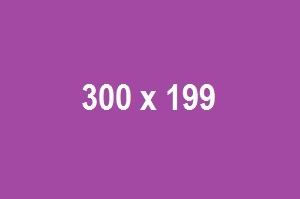

England vs Sri Lanka, 2nd Test at London, ENG v SL, Aug 29 2024 - Live Cricket Score
LIVE
2nd Test, Lord's, August 29 - September 02, 2024, Sri Lanka tour of England
BAN (34 ov) 427 & 159/4 PAK 234 Day 3 - Session 1: England lead by 390 runs. Current RR: 4.67 • Min. Ov. Rem: 63 • Last 10 ov (RR): 55/1 (5.50)
- Match Coverage
- All Match News
-
Hasan Mahmud and Nahid Rana put Bangladesh in sight of historic sweep
Chasing 185, Bangladesh need another 143 with all ten wickets intact

- Litton and Mehidy orchestrate a comeback for the ages Chasing 185, Bangladesh need another 143 with all ten wickets intact 
-
A picture perfect morning for Khurram Shahzad
Chasing 185, Bangladesh need another 143 with all ten wickets intact

-
Stats: Litton Das' ever growing list of Test match rescue acts
Chasing 185, Bangladesh need another 143 with all ten wickets intact

Ask Cricnews
Instant answers to T20 questions
Instant answers to T20 questions
- What is the highest total chased in men's T20 World Cups?
- Most sixes in an innings by a batter in men's T20 World Cups?
- Who has taken the most Powerplay wickets in men's T20 World Cups?

Bangladesh Innings
| PLAYER | R | B | |
|---|---|---|---|
| Rizwan* | bowled | 44 | 38 |
| Salman Agha | caught | 24 | 47 |
| Nazmul | not out | 18 | 23 |
| Mominul | not out | 14 | 27 |
| Extras | (b 1, lb 2) | ||
| TOTAL | 96 (2 wkts; 24.5 ovs) |
ICC World Test Championship
FULL TABLE
| TEAM | M | W | L | D | PT | PCT |
|---|---|---|---|---|---|---|
| IND | 9 | 6 | 2 | 1 | 74 | 68.52 |
| ENG | 8 | 7 | 2 | 1 | 84 | 68.52 |
| AUS | 7 | 4 | 2 | 1 | 54 | 68.52 |
| SA | 10 | 5 | 2 | 1 | 74 | 68.52 |
| NZ | 9 | 4 | 2 | 1 | 74 | 68.52 |
| BAN | 8 | 5 | 2 | 1 | 74 | 68.52 |
| SL | 10 | 5 | 2 | 1 | 74 | 68.52 |
| PAK | 11 | 7 | 2 | 1 | 74 | 68.52 |
| WI | 5 | 2 | 2 | 1 | 74 | 68.52 |
That's all from us today. I hope you all enjoyed the game of cricket with us. It's been a pleasure having you guys over the last few days. Signing off on behalf of Shakeel, the whole crew, and myself. Take care of yourselves.
Najmul Hossain Shanto: "(Series win) All right, it means a lot. We can't express with words really happy. I think before we came here we're looking to win here, and the way everyone did their job, really happy. (Bowling unit) Very impressive. I think the most important thing is their work ethic. I think the way they did their work in the recent past time, that's why they get the result. And then everyone was honest with themselves, and they wanted to win. So that is important for our team, and then I hope they will continue. (Opening batters) Yeah, Joy missed out because he has some niggles, but the way Shadman batted, especially the first 93 runs innings, it was excellent. And this innings, the way Zakir approached first six, seven overs, I think the momentum came to us, and then that's what we want from the both of them. (Middle order) Very important. I think the next series is very important, and this series gives us a lot of confidence. And as you mentioned Mushi bhai, Shakib bhai, Litton, and Mominul, they're all experienced playing a lot of cricket, and they show their experience, and I hope they will do better than this in the India series. (Mehidy Hasan Miraz) Very important. I think the way he bowled in the first innings on this kind of condition, taking five wickets. It's it's impressive. And the way, as I mentioned before, the way he worked his last couple of days practicing talking to the coaches was really impressive. And I hope against India they will do the same as he did. (Team performance) Yeah, very happy. I think everyone chipped in in this series; it's totally a team game. Especially I mentioned those who are not getting a chance to play those four guys. Doing a lot of hard work in the field is also very important. We always talk about those who score runs or take wickets. But the way those four guys are not playing is helping the team. It's very, very impressive. That's how we will get the result, and I hope this culture will go going forward. (Post match celebration) It depends on the manager, but we have to travel as well, but I think we have to celebrate this moment."
Player of the Match Litton Das: "Just believe in myself. Pakistan bowled really well in that half. Me and Miraz discussed that we should bat long and keep their momentum out. After that, Miraz hit few boundaries, and the momentum shifted. After lunch, it got easier. (With Hasan Mahmud) When Hasan came to bat, I did not have any scoring opportunity at that time. All the fielders were set out. I took my time, and I had to play the over, not taking runs or anything. Because there were lots of singles open for me. That was the key for me, and credit goes to Hasan; he batted really well. (Wicket keeping) Yeah, definitely. I like keeping in a Test match because this is my role. I did my work behind the wicket, and my team also did well. (Historic win) When we came here, back at home, the situation was not good. We arrived here earlier and practiced early. This is all about team effort. The way every player did in this weather, it is very difficult to play five-day cricket. And credit goes to all my teammates and the coaching staff."
13:30: Bangladesh closes out the series 2-0 with a six-wicket victory in the match. For the Bangladeshi cricket team, this is a historic Test series victory. In all three departments, they have definitely outperformed Pakistan. Bangladesh's performance in the first innings of the second test has been outstanding, particularly their comeback after trailing 26/6. Pakistan, on the other hand, continues their dismal run of red ball cricket at home. Despite taking four wickets today, the Pakistani team was unable to reverse the momentum and regain control of the game. Bangladesh's two experienced players, Shakib Al Hasan and Mushfiqur Rahim, led their team to victory at the end.
Vishal S.: "Credits should also go Shanto, the captain, for marshalling his resources brilliantly." You and I both agree, Vishal. It surprises me that this is the first feedback made about Shanto's captaincy throughout the entire test series. His field setup, bowling change that produced breakthroughs, and resource management have all, in my opinion, been outstanding throughout the series.
Rama: "@ Sandeep: a bit too early to say that... they still have to cross the line... and they seem to be getting into a shell.."
Ahmed: "it's only fitting that two veteran of BD cricket take them over the line in this historic series win"
Load More